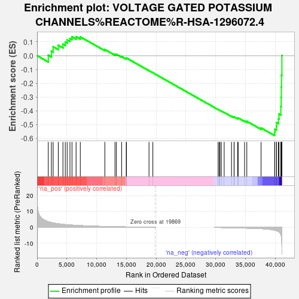
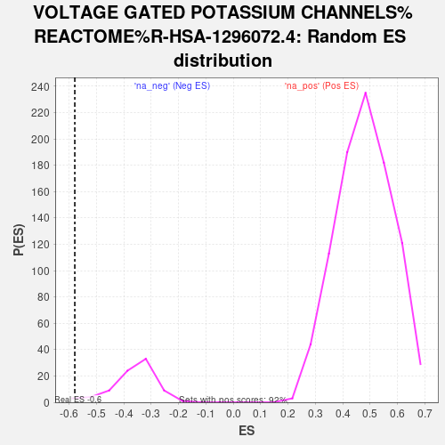

| | | Dataset | DS_vs_CTR_ranked_genelist |
| Phenotype | NoPhenotypeAvailable |
| Upregulated in class | na_neg |
| GeneSet | VOLTAGE GATED POTASSIUM CHANNELS%REACTOME%R-HSA-1296072.4 |
| Enrichment Score (ES) | -0.57928663 |
| Normalized Enrichment Score (NES) | -1.5837357 |
| Nominal p-value | 0.024096385 |
| FDR q-value | 0.21714182 |
| FWER p-Value | 1.0 |
Table: GSEA Results Summary

Fig 1: Enrichment plot: VOLTAGE GATED POTASSIUM CHANNELS%REACTOME%R-HSA-1296072.4
Profile of the Running ES Score & Positions of GeneSet Members on the Rank Ordered List
| SYMBOL | RANK IN GENE LIST | RANK METRIC SCORE | RUNNING ES | CORE ENRICHMENT | | 1 | KCNG1 | 1880 | 3.603 | 0.0034 | No |
| 2 | KCNH5 | 2402 | 3.099 | 0.0330 | No |
| 3 | KCNG3 | 2699 | 2.854 | 0.0648 | No |
| 4 | KCNA4 | 3561 | 2.309 | 0.0753 | No |
| 5 | KCNQ1 | 4341 | 1.962 | 0.0832 | No |
| 6 | KCND3 | 4734 | 1.822 | 0.0985 | No |
| 7 | KCNA3 | 5049 | 1.717 | 0.1143 | No |
| 8 | KCNH2 | 5521 | 1.581 | 0.1244 | No |
| 9 | KCNA5 | 5863 | 1.490 | 0.1365 | No |
| 10 | KCNH7 | 6547 | 1.314 | 0.1378 | No |
| 11 | KCNC4 | 7257 | 1.163 | 0.1364 | No |
| 12 | KCNG2 | 11378 | 0.616 | 0.0445 | No |
| 13 | KCNC1 | 13081 | 0.468 | 0.0094 | No |
| 14 | KCNA6 | 13321 | 0.443 | 0.0097 | No |
| 15 | KCNQ3 | 14200 | 0.387 | -0.0064 | No |
| 16 | KCNQ4 | 14973 | 0.329 | -0.0207 | No |
| 17 | KCND2 | 15005 | 0.325 | -0.0170 | No |
| 18 | KCND1 | 18792 | 0.051 | -0.1085 | No |
| 19 | KCNH8 | 19439 | 0.018 | -0.1240 | No |
| 20 | KCNQ5 | 30398 | -0.031 | -0.3904 | No |
| 21 | KCNQ2 | 30590 | -0.043 | -0.3944 | No |
| 22 | KCNV2 | 30715 | -0.051 | -0.3967 | No |
| 23 | KCNH6 | 30936 | -0.064 | -0.4012 | No |
| 24 | KCNA7 | 31416 | -0.096 | -0.4116 | No |
| 25 | KCNAB3 | 32647 | -0.192 | -0.4389 | No |
| 26 | KCNAB1 | 33075 | -0.230 | -0.4461 | No |
| 27 | KCNG4 | 33089 | -0.232 | -0.4433 | No |
| 28 | KCNC2 | 33673 | -0.290 | -0.4535 | No |
| 29 | KCNS3 | 33761 | -0.297 | -0.4516 | No |
| 30 | KCNAB2 | 34843 | -0.387 | -0.4726 | No |
| 31 | KCNH4 | 35215 | -0.438 | -0.4757 | No |
| 32 | KCNS2 | 37608 | -0.751 | -0.5237 | No |
| 33 | KCNH3 | 39894 | -1.690 | -0.5562 | Yes |
| 34 | KCNA2 | 39917 | -1.705 | -0.5335 | Yes |
| 35 | KCNA10 | 40190 | -2.006 | -0.5127 | Yes |
| 36 | KCNH1 | 40218 | -2.043 | -0.4855 | Yes |
| 37 | KCNC3 | 40521 | -2.523 | -0.4584 | Yes |
| 38 | KCNB1 | 40620 | -2.797 | -0.4226 | Yes |
| 39 | KCNV1 | 40929 | -4.445 | -0.3694 | Yes |
| 40 | KCNB2 | 40979 | -5.038 | -0.3018 | Yes |
| 41 | KCNS1 | 41012 | -5.534 | -0.2271 | Yes |
| 42 | KCNA1 | 41044 | -6.238 | -0.1427 | Yes |
| 43 | KCNF1 | 41103 | -10.580 | 0.0004 | Yes |
Table: GSEA details [plain text format]

Fig 2: VOLTAGE GATED POTASSIUM CHANNELS%REACTOME%R-HSA-1296072.4: Random ES distribution
Gene set null distribution of ES for VOLTAGE GATED POTASSIUM CHANNELS%REACTOME%R-HSA-1296072.4